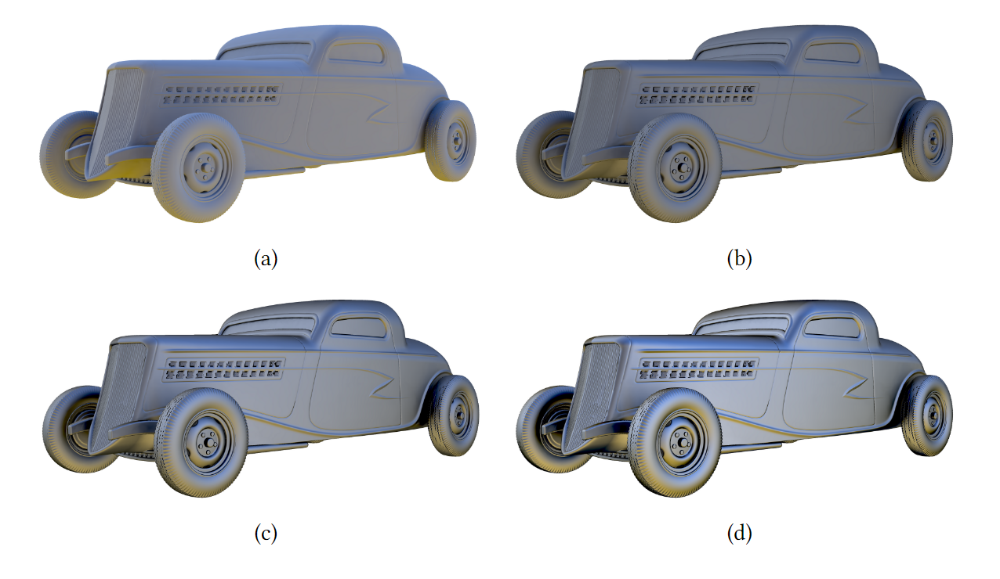
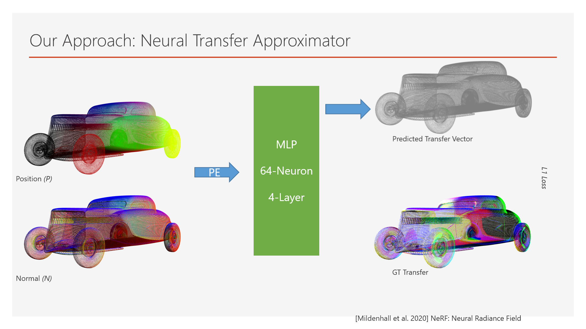
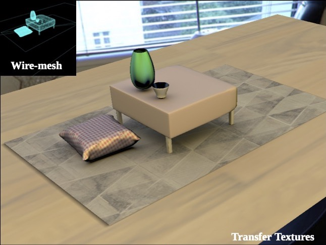
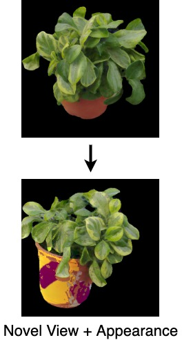

Publications
Full publications list.
2025
-

Linearly Transformed Spherical Distributions for Interactive Single Scattering with Area Lights
Eurographics 2025, Computer Graphics Forum (CGF)
Linearly Transformed Spherical Distributions (LTSDs), a superset of the commonly known Linearly Transformed Cosines (LTCs) for analytic area light rendering, applied in the context of analytic area light rendering with participating media.
2023
-

Combining Resampled Importance and Projected Solid Angle Samplings for Many Area Light Rendering
ACM SIGGRAPH Asia 2023, Technical Communications (Formerly Technical Briefs)
We identify the core issue for the high run-times of a naive combination of RIS and projected solid angle sampling. We then reformulate RIS for a better integration with projected solid angle sampling, achieving the state-of-the-art in many area light rendering.
-

Analytical & Neural approaches to Physically Based Rendering
ACM SIGGRAPH Asia 2023, Doctoral Consortium
Summary of my PhD thesis, including two extensions to LTCs and the extension of NRC for efficient hair rendering.
-

Accelerating Hair Rendering by Learning High-Order Scattered Radiance
Eurographics Symposium on Rendering (EGSR) 2023, Computer Graphics Forum (CGF) Vol. 42, No. 4
Efficiently and accurately rendering hair accounting for multiple scattering is a challenging open problem. We present a technique to infer the higher order scattering in hair in constant time within the path tracing framework, while achieving better computational efficiency.
2022
-

Bringing Linearly Transformed Cosines to Anisotropic GGX
ACM SIGGRAPH Symposium on Interactive 3D Graphics and Games (I3D) 2022, PACM-CGIT, Best Paper Award
We present an extension to LTCs for anisotropic GGX, in the context of real-time analytic area light shading. Our approach robustly fits LTC matrices to anisotropic GGX and ensures artefact free rendering. The end result is a 84 LUT parameterized by the elevation and azimuth of view vector and the roughness in x and y directions.
-

Real-Time Rendering of Arbitrary Surface Geometries using Learnt Transfer
ICVGIP 2022, Full Paper
In this paper, we propose a compact transfer representation that is learnt directly on scene geometry points. Specifically, we train a small multi-layer perceptron (MLP) to predict the transfer at sampled surface points.
-

Learnt Transfer for Surface Geometries
High Performance Graphics 2022 (HPG), Poster
-

PRTT: Precomputed Radiance Transfer Textures
Eurographics (EG) 2022, Poster
We analyze and extend PRT to use textures for storing transfer, instead of at vertices of a mesh. We demonstrate better rendering quality for the same mesh resolution for glossy reflection and inter-reflections.
2021
-

Fast Analytic Soft Shadows from Area Lights
Eurographics Symposium on Rendering (EGSR) 2021, DL-only track
We present an analytical solution for soft shadows from area lights, which naturally produces noise-free renderings as compared to equivalent stochastic methods. A structured approach to analytically compute soft shadows from spherical projections of lights and occluders with any 3D shape and efficiently for convex 3D shapes.
-

Neural View Synthesis with Appearance Editing from Unstructured Images
ICVGIP 2021, Full Paper
We present a neural rendering framework for simultaneous view synthesis and appearance editing of a scene with known environmental illumination captured using a mobile camera. Our approach explicitly disentangles the appearance and learns a lighting representation that is independent of it.
2019
-

A Flexible Neural Renderer for Material Visualization
ACM SIGGRAPH Asia 2019, Technical Briefs
Photo realism in computer generated imagery is crucially dependent on how well an artist is able to recreate real-world materials in the scene. We propose a convolutional neural network based workflow which generates high-quality ray traced material visualizations on a shaderball, in real-time.
-